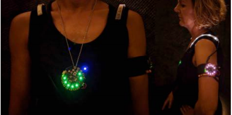
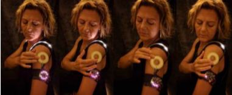

Wearables--smart watches, glasses, wristbands, and the like--are a growing segment of computing technology in everyday life. These devices by their nature impact in-person social interactions--they are meant to be used while on the go, and thus become intertwined with everyday social contexts and activities. As we introduce technology ever deeper into everyday social situations, it is important both to avoid degrading the quality of in-person social interaction, and ideally, to enhance it.
In the Social Wearables project, we systematically tackle the question of best supporting collocated social interaction using wearables, by developing and field testing novel technological prototypes in varied application domains, from games to office activities.
We have created social wearables for the battlestar galatica LARP(Live Action Role Play) arranged by Eleventh Hour Production and Phoenix Outlaw Production. The wearables were incorporated as a part of the game narrative and that impacted a lot on the social interaction between players with and without wearable tech.
We have created 2 different wearables devices. First is the circular ring and other is which you wear on the shoulders. Explain different features of both the devices. Put single image of both of them in the description.
We have analysed the data collected from this project and got recommendation about the paper and here is the paper and cite the paper.
I have started this project back when I was in New York and worked remotely throughout the production phase of the LARP but this is one of the biggest reason to make me change my school from NYU to UCSC and work with Katherine Isbister.
Adafruit Playground, Arduino
Elena Marquez, James Fey, Jared Pettit and Katherine Isbister
Demoed at DEXCON 13
Designing Future Social Wearables with Larp Designers in CHI 2018